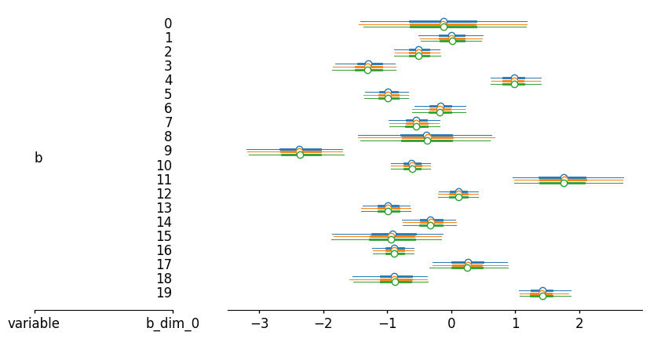
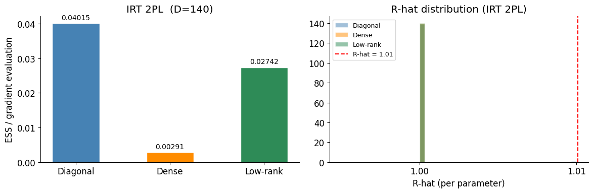

Low-Rank Mass Matrix Adaptation#
Standard HMC preconditioning adapts the mass matrix to match the posterior geometry:
Diagonal (
window_adaptationdefault): adapts a per-parameter scale via Welford’s variance estimator. Efficient and robust but ignores correlations.Dense (
is_mass_matrix_diagonal=False): full covariance estimate via Welford’s algorithm. Captures all correlations but is \(O(D^2)\) in memory/compute and can overfit when warmup samples are few.Low-rank (Sountsov, Carlson & Carpenter, 2025): finds the best rank-\(k\) correction to a diagonal mass matrix by minimising the Fisher divergence — the expected squared norm of the difference between the score of the preconditioned distribution and a standard normal. The inverse mass matrix has the form
where \(\sigma \in \mathbb{R}^d_{>0}\) is a diagonal scale, \(U \in \mathbb{R}^{d \times k}\) are orthonormal eigenvectors, and \(\Lambda = \operatorname{diag}(\lambda)\). When \(k \ll d\) all HMC operations are \(O(dk)\), so this scales to high dimensions while still capturing the dominant correlations.
The key insight is that the optimal diagonal scale from the Fisher criterion is
which uses both the curvature (gradient variance) and the spread (sample variance), giving a more statistically efficient estimator than Welford’s variance alone.
import jax
jax.config.update("jax_enable_x64", True)
from datetime import date
rng_key = jax.random.key(int(date.today().strftime("%Y%m%d")))
import jax.numpy as jnp
import numpy as np
import numpyro
import numpyro.distributions as dist
from numpyro.infer.util import initialize_model
import blackjax
Helper: run NUTS with each adaptation scheme#
We define a single helper that runs NUTS warmup with a chosen adaptation strategy, then draws posterior samples across multiple independent chains. The function returns the samples and a count of gradient evaluations (including those during warmup), so we can compare efficiency fairly.
def run_nuts(logdensity_fn, init_params, rng_key, *,
adaptation="diag", num_warmup=500, num_samples=1000,
num_chains=4, max_rank=10):
"""Run NUTS with multiple chains in parallel via jax.vmap.
Each chain runs its own warmup and sampling. All chains are vmapped
so they execute simultaneously on the same device.
Parameters
----------
adaptation : {"diag", "dense", "low_rank"}
max_rank : only used when adaptation="low_rank"
Returns
-------
samples : pytree with shape (num_chains, num_samples, ...)
n_grad : total gradient evaluations across all chains (warmup + sampling)
"""
if adaptation == "low_rank":
warmup = blackjax.low_rank_window_adaptation(
blackjax.nuts, logdensity_fn, max_rank=max_rank
)
else:
warmup = blackjax.window_adaptation(
blackjax.nuts, logdensity_fn,
is_mass_matrix_diagonal=(adaptation == "diag"),
)
def one_chain(rng_key):
k_warm, k_sample = jax.random.split(rng_key)
(state, params), warmup_info = warmup.run(k_warm, init_params, num_warmup)
warmup_grads = jnp.sum(warmup_info.info.num_integration_steps)
nuts = blackjax.nuts(logdensity_fn, **params)
def step(state, key):
state, info = nuts.step(key, state)
return state, (state.position, info.num_integration_steps)
keys = jax.random.split(k_sample, num_samples)
_, (samples, n_steps) = jax.lax.scan(step, state, keys)
return samples, warmup_grads + jnp.sum(n_steps)
chain_keys = jax.random.split(rng_key, num_chains)
samples, all_grads = jax.vmap(one_chain)(chain_keys)
return samples, int(jnp.sum(all_grads))
Example 2 — Item Response Theory (2PL)#
The 2-parameter logistic IRT model describes the probability that student \(i\) answers item \(j\) correctly as
where \(\theta_i\) is student ability, \(b_j\) is item difficulty, and \(a_j > 0\) is item discrimination. Priors:
With 100 students and 20 items this is a \(D = 140\) dimensional posterior. The student abilities \(\theta_i\) correlate through the shared item parameters, creating a low-rank correlation structure that is expensive to capture with a dense mass matrix at this dimension.
Synthetic data#
rng_key, k_data = jax.random.split(rng_key)
n_students, n_items = 100, 20
k1, k2, k3, k4 = jax.random.split(k_data, 4)
true_theta = jax.random.normal(k1, (n_students,))
true_b = jax.random.normal(k2, (n_items,))
true_a = jnp.abs(jax.random.normal(k3, (n_items,))) + 0.5
logits = true_a[None, :] * (true_theta[:, None] - true_b[None, :])
responses = jax.random.bernoulli(k4, jax.nn.sigmoid(logits)).astype(jnp.float64)
print(f"Response matrix: {responses.shape}, mean correct: {responses.mean():.2f}")
Response matrix: (100, 20), mean correct: 0.58
Model#
def irt_model(responses=None):
theta = numpyro.sample("theta", dist.Normal(0.0, 1.0).expand([n_students]))
b = numpyro.sample("b", dist.Normal(0.0, 1.0).expand([n_items]))
a = numpyro.sample("a", dist.HalfNormal(1.0).expand([n_items]))
logits = a[None, :] * (theta[:, None] - b[None, :])
numpyro.sample("obs", dist.Bernoulli(logits=logits), obs=responses)
rng_key, kinit = jax.random.split(rng_key)
(init_params_irt, *_), potential_fn_irt, *_ = initialize_model(
kinit, irt_model, model_kwargs={"responses": responses}, dynamic_args=True,
)
def irt_logdensity(params):
return -potential_fn_irt(responses)(params)
Sampling#
rng_key, k_diag, k_dense, k_lr = jax.random.split(rng_key, 4)
irt_diag, ngrad_irt_diag = run_nuts(irt_logdensity, init_params_irt, k_diag, adaptation="diag")
irt_dense, ngrad_irt_dense = run_nuts(irt_logdensity, init_params_irt, k_dense, adaptation="dense")
irt_lr, ngrad_irt_lr = run_nuts(irt_logdensity, init_params_irt, k_lr, adaptation="low_rank")
A note on parameterization#
numpyro.infer.util.initialize_model automatically transforms constrained parameters to unconstrained space: a (item discrimination, positive) is log-transformed, and — crucially — when the model has no explicit hierarchical structure on theta, each student ability is already sampled from an independent \(\mathcal{N}(0,1)\) prior. This is effectively a noncentred parameterization: the posterior correlations between \(\theta_i\) and the item parameters are weak in unconstrained space, so the diagonal mass matrix already captures most of the geometry.
A centered hierarchical parameterization — where \(\theta_i \sim \mathcal{N}(\mu_\theta, \sigma_\theta)\) with learned hyperparameters — would create strong posterior correlations between all student abilities and the two hyperparameters \((\mu_\theta, \sigma_\theta)\), giving the low-rank mass matrix a clear rank-2 structure to exploit. However, the centered parameterization mixes much more slowly and takes significantly longer to run, which is why we use the flat noncentred model here.
The Correlated Gaussian example above cleanly isolates the benefit of the low-rank metric without this confound.
Results#
results_irt = {
"Diagonal": ess_per_grad(irt_diag, ngrad_irt_diag),
"Dense": ess_per_grad(irt_dense, ngrad_irt_dense),
"Low-rank": ess_per_grad(irt_lr, ngrad_irt_lr),
}
for name, val in results_irt.items():
print(f"{name:10s} ESS/grad = {val:.5f}")
Diagonal ESS/grad = 0.04015
Dense ESS/grad = 0.00291
Low-rank ESS/grad = 0.02742
idata_dict = {}
for (name, samples) in [("Diagonal", irt_diag), ("Dense", irt_dense), ("Low-rank", irt_lr)]:
idata_dict[name] = az.from_dict({"posterior": samples})
axes = az.plot_forest(idata_dict, var_names=['b'], combined=True,
figure_kwargs={"figsize": (10, 5), "layout": "none"},);

Spot checking the posterior samples shows almost the same estimate across different warm up schemes.
fig, axes = plt.subplots(1, 2, figsize=(12, 4))
# ESS/grad bar chart
ax = axes[0]
bars = ax.bar(results_irt.keys(), results_irt.values(),
color=colors, edgecolor="white", width=0.5)
ax.bar_label(bars, fmt="%.5f", padding=3, fontsize=10)
ax.set_ylabel("ESS / gradient evaluation")
ax.set_title(f"IRT 2PL (D={n_students + 2 * n_items})")
# R-hat distributions across parameters
ax = axes[1]
for (name, idata), color in zip(idata_dict.items(), colors):
rhats = az.summary(idata)["r_hat"].values
ax.hist(rhats, bins=30, alpha=0.5, color=color, label=name, edgecolor="white")
ax.axvline(1.01, color="red", linestyle="--", label="R-hat = 1.01")
ax.set_xlabel("R-hat (per parameter)")
ax.set_title("R-hat distribution (IRT 2PL)")
ax.legend(fontsize=9)
plt.tight_layout()

Summary#
print(f"{'Model':<30} {'Diagonal':>12} {'Dense':>12} {'Low-rank':>12}")
print("-" * 68)
for model_name, results in [
(f"Correlated Gaussian (D={D})", results_gauss),
(f"IRT 2PL (D={n_students + 2 * n_items})", results_irt),
]:
print(f"{model_name:<30} {results['Diagonal']:>12.5f} {results['Dense']:>12.5f} {results['Low-rank']:>12.5f}")
Model Diagonal Dense Low-rank
--------------------------------------------------------------------
Correlated Gaussian (D=50) 0.00634 0.01188 0.01547
IRT 2PL (D=140) 0.04015 0.00291 0.02742
The low-rank mass matrix adaptation combines the scalability of the diagonal estimator with much of the correlation-capture ability of the dense estimator. The Fisher-divergence objective uses both the gradient variance and sample variance, giving a more efficient estimator than Welford’s algorithm alone. Because only \(k \ll D\) eigenvectors are stored, it remains practical at hundreds of dimensions where dense mass matrices become expensive.
Choosing max_rank: the default max_rank=10 works well across many posteriordb models. For posteriors with a known low-dimensional structure (e.g. an IRT model where a small number of item factors drive student ability) you can increase it; for very high-dimensional posteriors (\(D > 10^3\)) you may want to reduce it to keep per-step cost low.
Choosing cutoff: eigenvalues in \([1/\text{cutoff}, \text{cutoff}]\) are masked to 1 (no-op correction). The default cutoff=2.0 avoids applying corrections for directions that are nearly already isotropic after diagonal scaling.